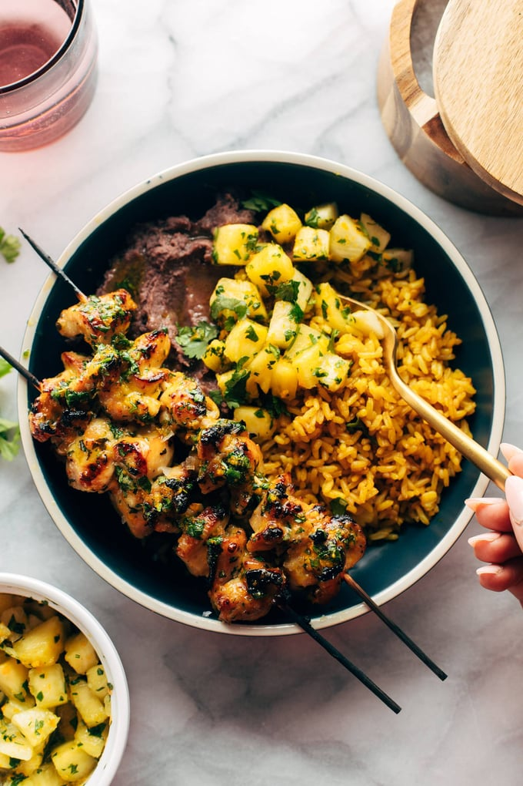

This golden Cilantro Orange Chicken is so flavorful, crisped to golden brown perfection, and just very finger-licking good! Served with rice, beans, and a quick homemade pineapple salsa.
INGREDIENTS
This golden Cilantro Orange Chicken is so flavorful, crisped to golden brown perfection, and just very finger-licking good. You’re going to need some napkins.
Cilantro Orange Sauce:
- 1/4 – 1/2 cup cilantro, finely chopped
- 2 cloves garlic, grated
- juice of 2 oranges (about 4–5 tablespoons juice) + a bit of zest
- 3 tablespoons brown sugar
- 3 tablespoons avocado oil
- 2 tablespoons white vinegar
- 1 1/2 teaspoons salt
Chicken:
- 1.25 pounds boneless skinless chicken thighs, cut into bite sized pieces
- wood or metal skewers (optional)
Optional / For Serving:
- one 8.8-ounce pouch pre-made yellow rice (or make your own!)
- one 14-ounce can refried or regular black beans
- 1–2 cups diced pineapple, mango, and/or avocado (optional)
INSTRUCTIONS
- If you’re using wood skewers, start soaking them!
- Line a baking sheet with parchment paper or aluminum foil. Turn on the broiler, and make sure one of the oven racks is way up at the top, about 6 inches from the heating element.
- Place chicken in a large mixing bowl.
- Combine the sauce ingredients in a small bowl.
- Pour only half of the sauce over the chicken and toss to coat; reserve the other half of the sauce for later. Thread the chicken pieces onto skewers,
or you can just let the excess sauce drip off and add the chicken directly to your sheet pan! If you want (I do!) season the chicken with a little pinch of extra salt.
- Broil for 12 minutes, or until chicken is cooked through and has a burnished and golden exterior.